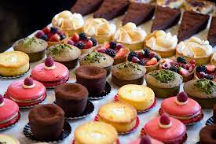
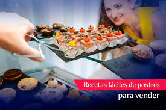

Pasteles
Galletas
Bizcochos
Budines
Tarta
¿REPOSTERIA?
La repostería, confitería o pastelería es el arte de preparar o decorar pasteles u otros postres. El término repostería es el que se utiliza para denominar al tipo de gastronomía que se basa en la preparación, y decoración de platos dulces tales como tortas, tartas, pasteles, galletas, budines, etc.
|  |
Las ventajas que tienen los postres:
Los dulces alegran la vida y aportan energía, además las personas necesitan glucosa para la salud.
Los dulces mejoran el humor, pues al comerlo la feniletilamina que contienen hacen que nuestro cerebro secrete serotonina y endorfinas, que nos producen sensación de bienestar.
|  |